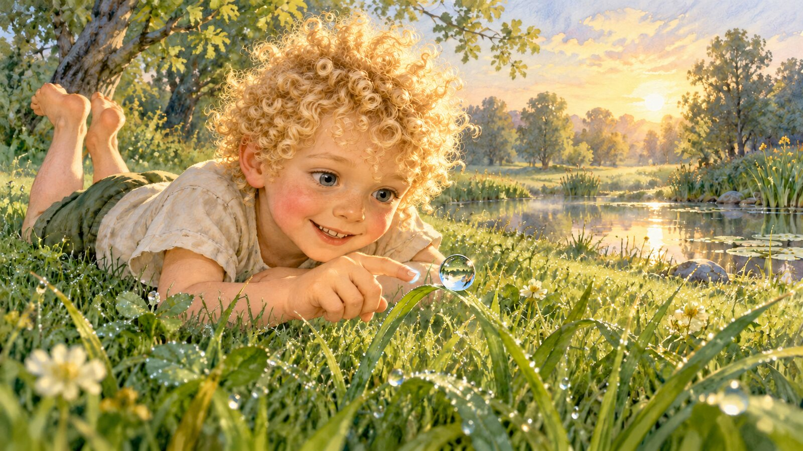

Touch the dewdrop
The Names of Light · Book one
Sydney and the Dance of Light and Water
A series of wonder, discovery and remembering, for children and the child within each of us.
Sydney is a boy who likes to look closely. While the grown-ups are still busy inside, he goes out where the morning is newest and lies down on his belly in the wet grass. He holds very still, and the world begins to show him things. A single drop of dew trembles on the tip of a leaf, round and bright as a tiny moon.
“Hello,” he whispers, and the drop seems to answer, wobbling a little, as if it were smiling back. He leans closer. Inside the drop is the whole morning: the sky, the morning sun and the tall green blades of grass.
“How can something so small hold so much?” Sydney wonders. He holds out a finger and touches the drop, and it slips away, falling and disappearing into the ground. Sydney looks at his empty fingertip, then at the wide, wet morning around him. Sydney wishes he could make himself small, small as the grass and the dew, small enough to live in their world. Down there, he would not have to be big. He could slip away from the big, grown-up world and stay.
From the opening of book one.
To hear when the books are published, email Fiona.